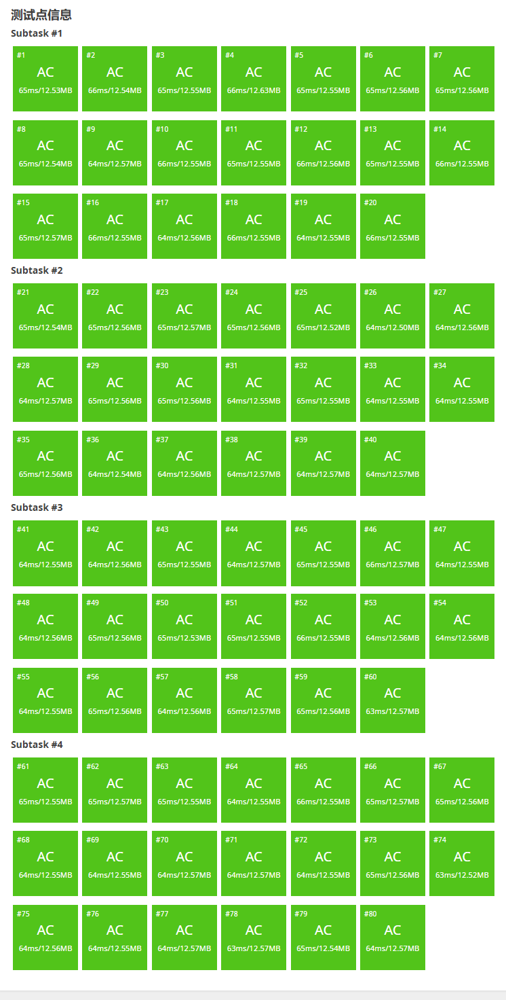

[每日算法]B4158 [BCSP-X 2024 12 月小学高年级组] 质数补全
题目描述
Alice 在纸条上写了一个质数，第二天再看时发现有些地方污损看不清了。
- 在大于 $1$ 的自然数中，除了 $1$ 和它本身以外不再有其他因数的自然数称为质数
请你帮助 Alice 补全这个质数，若有多解输出数值最小的，若无解输出 $-1$。
例如纸条上的数字为 $\tt{1}$（$\tt{}$ 代表看不清的地方），那么这个质数有可能为 $11, 13, 17, 19$，其中最小的为 $11$。
输入格式
第一行 $1$ 个整数 $t$，代表有 $t$ 组数据。
接下来 $t$ 行，每行 $1$ 个字符串 $s$ 代表 Alice 的数字，仅包含数字或者 $\tt{}$，并且保证首位不是 $\tt{}$ 或者 $0$。
输出格式
输出 $t$ 行，每行 $1$ 个整数代表最小可能的质数，或者 $-1$ 代表无解。
输入输出样例 #1
输入 #1
Text Only
10
1*
3**
7**
83*7
2262
6**1
29*7
889*
777*
225*
输出 #1
Text Only
11
307
701
8317
-1
6011
2917
8893
-1
2251
输入输出样例 #2
输入 #2
Text Only
10
4039***
2***5*5
4099961
25**757
7***0**
1***00*
41811*9
6***0*7
8***1**
6561*59
输出 #2
Text Only
4039019
-1
4099961
2509757
7000003
1000003
4181129
6000047
8000101
6561259
说明/提示
样例 3-6
参考附件中的样例。
数据范围
$|s|$ 代表 $s$ 串的长度，对于所有数据，$1 \leq t \leq 10, 1 \leq |s| \leq 7$，$s$ 中仅包含数字或者 $\tt{}$，并且保证首位不是 $\tt{}$ 或者 $0$。
本题采用捆绑测试，你必须通过子任务中的所有数据点以及其依赖的子任务，才能获得子任务对应的分数。
| 子任务编号 | 分值 | $\mid s\mid$ | 特殊性质 | 子任务依赖 |
|---|---|---|---|---|
| $1$ | $35$ | $\leq 7$ | $s$ 中没有 $\tt{*}$ | |
| $2$ | $30$ | $\leq 4$ | ||
| $3$ | $24$ | $\leq 7$ | $s$ 中至多包含 $1$ 个 $\tt{*}$ | $1$ |
| $4$ | $11$ | $\leq 7$ | $1,2,3$ |
题解
C++
#include<bits/stdc++.h>
using namespace std;
const int N = 1e7 + 5;
int pr[N/10];
bool st[N];
int cn = 0;
void init(){
st[0] = st[1] = 1;
for(int i = 2; i < N; i++){
if(!st[i]){
pr[cn++] = i;
}
for(int j = 0; j < cn && pr[j] <= (N-1) / i; j++){
st[pr[j] * i] = 1;
if(i % pr[j] == 0) break;
}
}
}
string s;
int le;
bool dfs(int idx){
if(idx >= le){
if(s[le-1] == '0' || s[le-1] == '2' || s[le-1] == '4' || s[le-1] == '5' || s[le-1] == '6' || s[le-1] == '8')
return 0;
if(!st[stoi(s)]){
cout << s << "\n";
return 1;
}else return 0;
}
if(s[idx] == '*'){
for(char c = '0'; c <= '9'; c++){
s[idx] = c;
if(dfs(idx+1)){
return 1;
}
s[idx] = '*';
}
return 0;
}else{
return dfs(idx+1);
}
}
int main(){
ios::sync_with_stdio(0);
cin.tie(0);
init();
int t;
cin >> t;
while(t--){
cin >> s;
le = s.size();
if (!dfs(0)) {
cout << -1 << "\n";
}
}
return 0;
}

← Home